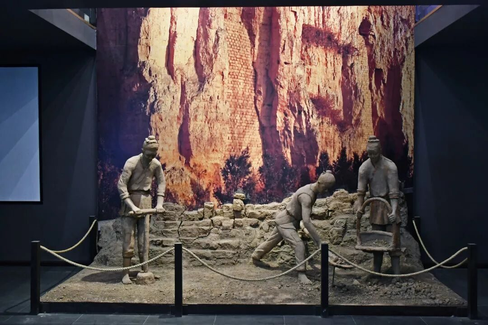
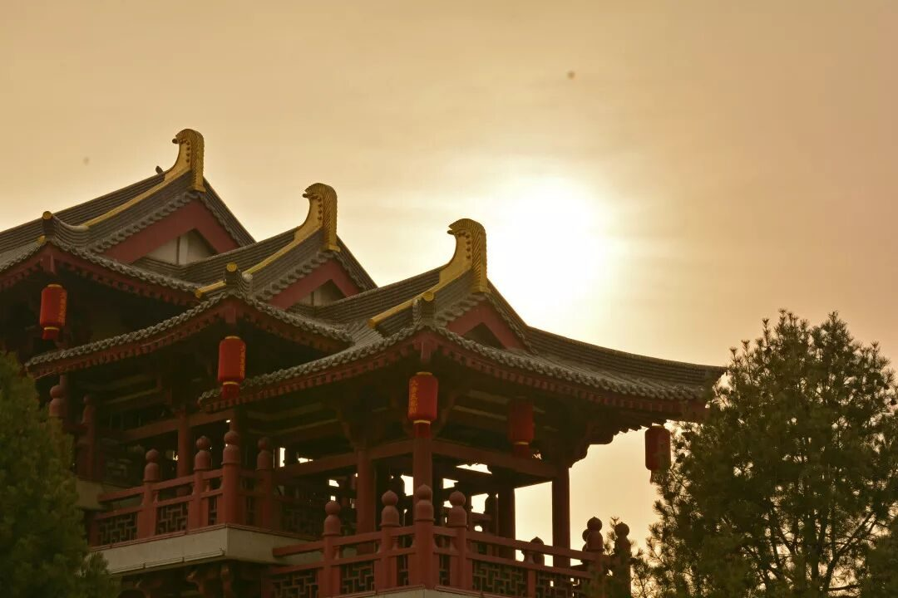
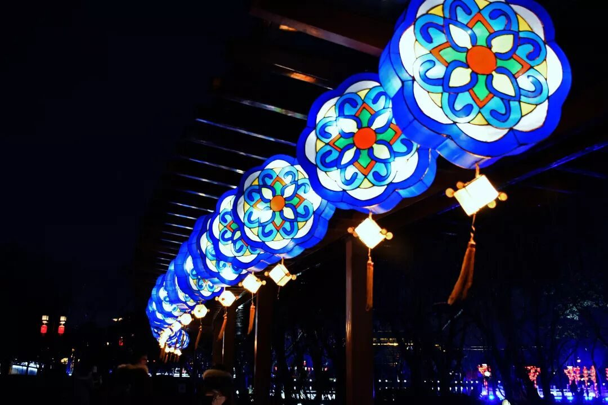

【行者无疆·韶忆长安】一眼千年是古都，追秦溯唐沐清风

 | 西安 |
西安市位于中国的西部，它地处黄河流域关中平原中部，是一座历史悠久的现代化大城市。西安的人文山水，古城新姿交相辉映，构成古老西安特有的神韵风姿。西安是一座古老而神奇的城市，西安是一座承载着华夏文明的文化古都。
一眼千年，寻古探今 六王毕，四海一，蜀山兀，阿房出。 ——杜牧《阿房赋》 |
当踏上真正的阿房宫的历史遗址，并不见“五步一楼，十步一阁；廊腰缦回，檐牙高啄”的宏大建筑群，展现眼前的只是“东西五百步，南北五十丈”的大夯土台的前殿遗址，即使如此，仍然震惊于那一层层坚实的土层，震撼于秦的富足强大，悲痛于秦的奢靡酷政。历史，本该如此，保留其本真的东西，展现其最初的样貌，历史的意、历史的韵、历史的盛、历史的悲，应该留给后人，任他们来评价这段历史。
扭转时空，梦回唐朝 满耳旌歌满眼花，满楼珠翠胜吴娃。 因知海上神仙窟，只似人间富贵家。 ——韦庄《陪金陵府相中堂夜宴》 |
<< 滑动查看下一张图片 >>
初入大唐芙蓉园，对于建筑和景观背后的典故传说则是非常震撼。
漫步其间，高大的古典建筑、喷薄而出的涓涓细流、连绵不绝的廊桥幽……
赏玩其间，御苑门的《大唐鼓宴》，鼓槌的起落之间，鼓声的一张一弛，都在诉说着那穿越千年的唐朝盛世，也在积淀着那沉淀千年的文化历史；杏园的《金狮点状元》，金狮的跳跃辗转，表演的惊心动魄，都在彰显着那跨越千年的表演技艺，也在讲述着那历经千年的文化故事……
华灯初上，置身人流之中，极目远眺，那是灯的海洋、灯的长龙，那是“春到人间人似玉，灯烧月下月如银”，那是城市夜景的内涵体现，那也是典雅端庄与现代时尚的结合。

|
图片丨丛雨晴 王一岚
文字丨张媛媛
责编丨王洁
审核丨邓子孚 潘雯雯
行者无疆实践团
QQ：2758025831
随行者一起认识世界
长按二维码关注